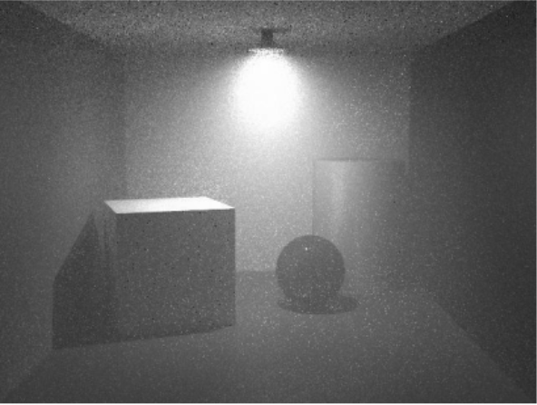
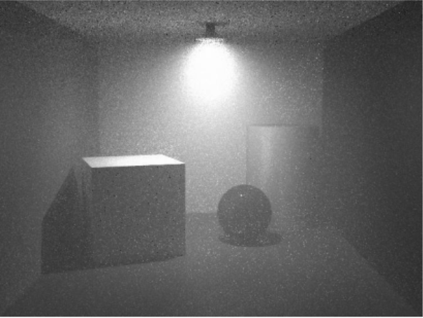
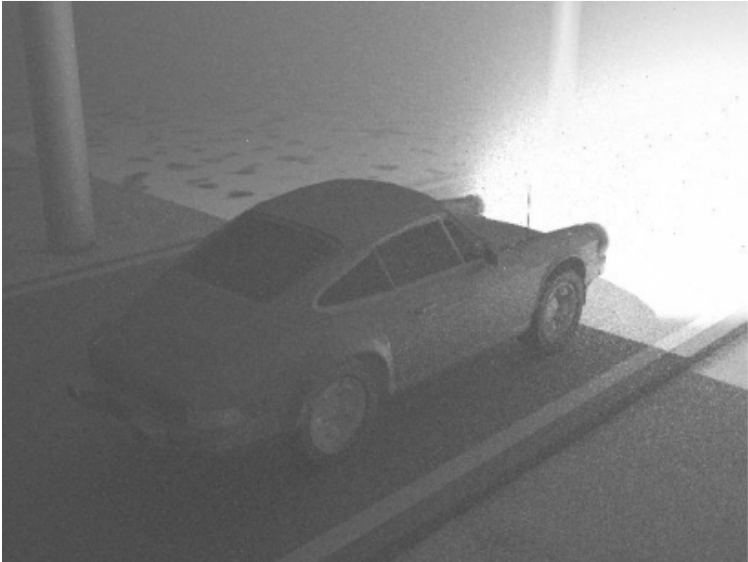
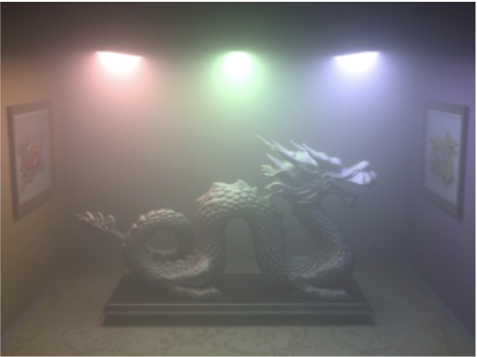
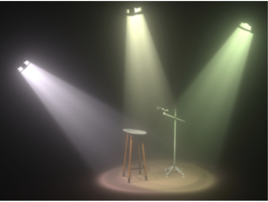

|
|

|
In this project, we attempt to render 3D images with the presence of airborne particles that affect the direction that light travels. Previously, in projects 3-1 and 3-2, we treated light as rays, where light would travel in lines without any interaction with the air and would only reflect or refract upon reaching solid surfaces. We hope to be able to model the behavior of light when airborne particles may cause light to be scattered without reaching solid surfaces and the resultant light when multiple rays do arrive at a particular surface.
In the real world, in some situations such as outdoors on a clear day or indoor settings, light does appear to travel similarly to rays and we cannot see light reflected or refracted as it travels through air. However, there are many other situations where light interacts with airborne particles which cause it to reflect, refract, or change directions. When rendering scenes for those situations, such as on a misty day in the forest for games, during a stormy day with lots of rain, or the smoky conditions around a forest fire, we must also consider the effects of airborne particles on locations without solid surfaces and how extra scattering light affects the reflections on solid surfaces.
This problem provides an extra challenge compared to projects 3-1 and 3-2, since at every time step or at every location where airborne particles are present, we must consider if light scatters and possibly generates extra rays. In that situation, we also must consider how to prevent our code from infinitely generating more and more rays as our time steps increase. We also will have to consider that light reflected from airborne particles might directly arrive at our camera point and will affect how solid surfaces behind the airborne particles appear to our camera.
We have found several sources that mathematically model the behavior of light when it intersects lightborne particles, but one big challenge for this project will be reducing the mathematical models into an efficient, but realistic model for our code to render. We believe that after reducing the mathematical models into an efficient algorithm, the rest of the project will behave similarly to projects 3-1 and 3-2. The other major challenge for us to address is to have the light be translucent while allowing the surface behind the air to be visible.
The overall goal of this project is to render several images, consisting of scenes with different airborne textures and color, realistically and accurately. The ways in which realism can be achieved is expanded upon below.
As mentioned in the project description, the goal of this project is to be able to render scenes with noticeable airborne particles affecting the appearance of the air. Comparing the images below, the scene on the right side is noticeably less “clear”- due to dust. Thus, the first part of our deliverables is to render the dust/smoke/mist and other airborne particles realistically. From the noticeable graining in the image on the right, we can begin to predict that there may be challenges to ensure that enough light actually reaches the camera, such that the scene can be rendered without graining and other aliasing issues.
|
|

|
*source for image on the right: http://luthuli.cs.uiuc.edu/~daf/courses/rendering/papers/lafortune96rendering.pdf
Another aspect of our goal - which is to render smoke, mist, dust etc. properly - is to ensure that the scene is realistic. Specifically, we want to have the foreground of the image be more transparent than the background. This is demonstrated well by the example render of a car in fog below (also taken from the UIUC paper written by Lafortune and Willems). The top (background) of the image is noticeably more opaque than the car (foreground), this is by product of there being physically more fog particles between the background and the camera than between the foreground and the camera.
|

|
As explored upon in Disney research, we also would like to see how color interacts with rendering airborne particles. We suspect, from looking at previous source code in Project 3-1 and 3-2, that we can simply change the color settings for the light sources, which may result in the color of the airborne particles also being rendered realistically. We’ll look into this further as part of our project, but being able to render colors accurately in the presence of airborne particles is definitely a portion of our project. Color is, after all, crucial to the application of this topic in video games and rendered scenes in computer graphics.
|

|

|
We believe these goals are appropriate and achievable for this project, given that we already have a good understanding of path tracing techniques, particularly for indirect illumination. From our intuition so far, fog/smoke/mist and other airborne particles that may reflect/refract light rays act as more obstacles that light rays will interact with. Hence, the core concept of this project is to simply trace even more light rays as they interact with the airborne particles. The challenge, however - as mentioned previously in our project description, is to do this efficiently, and may require some approximation techniques or shortcuts, including adaptive sampling (as explored in project 3-1). We may also investigate the effectiveness of bidirectional path tracing, as mentioned in some of the literature we looked at for this project.
Since we are simply rendering scenes, we will not require an interactive system to demonstrate the deliverables of this project.
In order to measure the quality / performance of the system, we will render several images with the same environment, but different features of the air particles. One feature can be the size of the particle. Another can be the density of air particles. Using these, we plan on finding and examining the relationship between these features and our scattering results. We also want to add images with different mediums of scattering (other than air) like water droplets, smoke particles, snow etc. This will show how the system responds to different conditions using similar rendering techniques. As we get these images, we plan on qualitatively comparing them to real life images with similar mediums and air particle features. We can set up a similarity score sheet where we can quantify these differences indicating the accuracy and quality of our system.
With our analysis, we plan to answer the questions that test the capabilities of the system. Some examples of these questions include, How capable the system is when it comes to similarity scores between the rendered images and the real life scenarios? Will the system give desired results for any medium, not just air? How does the color/wavelength of the light change based on different features of the air particles.
For part one of this project, we first plan to mathematically model airborne particles similarly to how our surfaces were able to be modeled. Specifically, just as CBdragon.dae or CBbunny.dae could be modeled as diffuse, microfacet, or mirror materials, we hope to be able to define some constants (such as alpha, eta, and k for microfacet materials) so that we can model different varieties of airborne particles, such as fog, smoke, or dust. Next, we intend to model how light interacts with such airborne particles. When airborne particles are present, light not only travels through the particles, but also gets reflected throughout the particles. We intend to model that reflecting and the appearance of that phenomenon on surfaces in our scene as well. Finally, we hope to reproduce the color blending as in the images in the deliverable sections. We hope that the color blending happens naturally as a result of the different light rays arriving on a surface.
Thus, our baseline plan for this final project consists of 3 main steps: firstly, rendering airborne particles (including dust, smoke, mist) realistically and with noticeable differences between each particle - we don’t want them to all look the same. Secondly, to model how light interacts with such particles accurately - for example, we would want the background of the image to be less transparent than the foreground. Thirdly, to blend color naturally as a result of the light rays being affected by the airborne particles. If we are able to achieve these 3 goals, then we believe the core concept of our project - to render volumetric scattering and airborne particles - has been completed, thus achieving the top grade we are aiming for.
In part two of this project, we aspire to implement a scene that allows for airborne particles to move around. In the images in the deliverables section, the rendering is of a static image, similarly to taking a picture of a scene. But in real life, airborne particles noticeably move around as time moves on. Our first thought was to implement a scene similarly to the simulation project, where the time steps are small enough to appear to be continuous. However, we are worried that the rendering will be too computationally expensive. Because of that, we are also considering having a couple of “snapshots” of the scene across several time steps and ultimately producing a gif instead of a simulation.
| Week Number | Tasks, Subtasks |
|---|---|
| 1 (4/10-4/16) | Explore and research the mathematics behind volumetric scattering.
|
| 2 (4/17-4/23) | Start implementing conceptual understanding of volumetric scattering to code
|
| 3 (4/24-4/30) | 4/26 - milestones deadline
|
| 4 (5/1-5/7) | 5/5 - project presentations (dead week, Thursday) |
| 5 (5/8 - 5/10) | 5/10 - final deliverables due (finals week, Tuesday) |
https://cs.dartmouth.edu/~wjarosz/publications/dissertation/chapter4.pdf http://luthuli.cs.uiuc.edu/~daf/courses/rendering/papers/lafortune96rendering.pdf
https://jasperchen3.github.io/cs184_sp22_final/